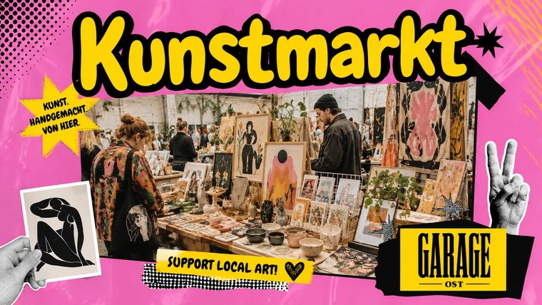
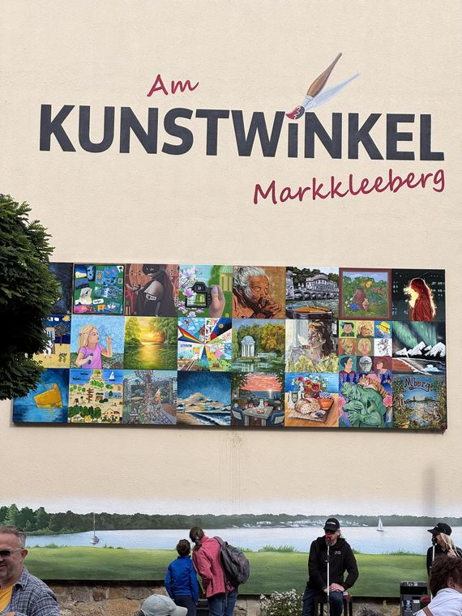

Ausstellungen & Märkte
Wo die Bilder zu sehen sind
Öffentlich gezeigte Arbeiten, vergangene und kommende. Manche Bilder sind unterwegs; wenn Sie ein bestimmtes Werk in echt sehen möchten, fragen Sie einfach.

Demnächst
Samstag, 12. September 2026 · 13:00–16:00 Uhr
Kunstmarkt, Garage Ost
Ein eigener Tisch beim Kunstmarkt in der Garage Ost — Originale, Studien und Drucke, und die Gelegenheit, persönlich über eine Auftragsarbeit zu sprechen.
Zur Veranstaltung →
Zu sehen bis 2027
Ab 5. September 2026 · Markkleeberg
Am Kunstwinkel — „Mein Bild für Dich“
„Die Morgenpfeife“ wurde als eines von 24 Werken für die Freiluftgalerie in Markkleeberg ausgewählt. Ein Jahr lang hängt das Bild dort, danach wird es versteigert.
Veranstaltung & Versteigerung →Sie organisieren etwas? Srijana freut sich über Märkte, Gruppenausstellungen und Ausstellungen in Cafés oder Praxen in und um Leipzig. Schreiben Sie an srijana.art.gallery@gmail.com.